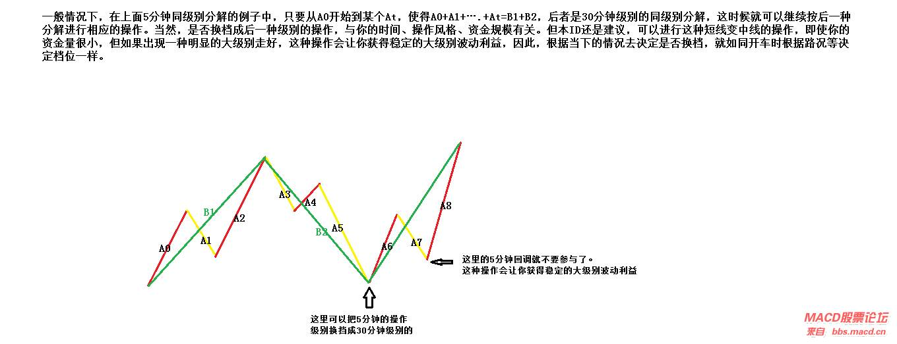
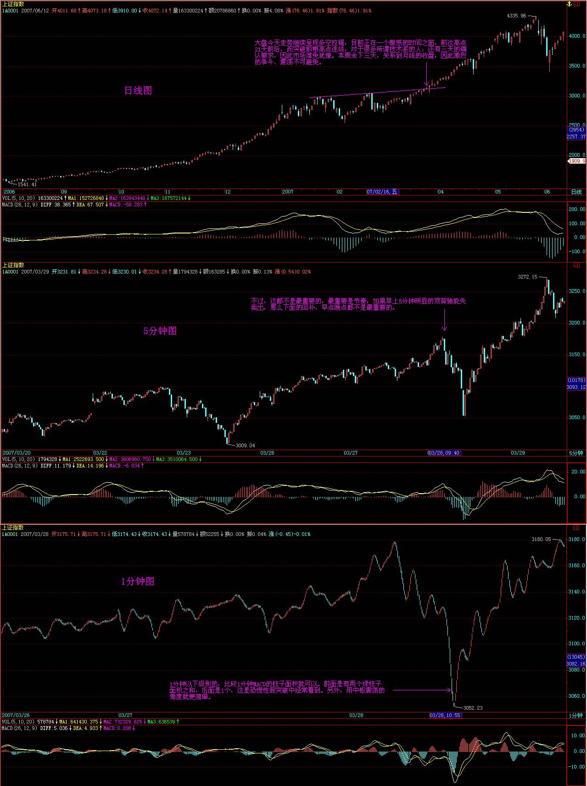

教你炒股票40：同级别分解的多重赋格
(2007-03-27
12:53:22)
投资，往往碰到这样两难的事情，就是一个小级别的进入，结果出现大级别的上涨，这时候怎么办？这时候有两个选择：一、继续按小级别操作，这样的代价是相当累，而且小级别操作的问题是对精确度要求比大级别高，而且资金容纳程度低；二、升级为大级别操作基础上部分保持小级别操作。对于资金比较大的投资，后者是比较实用的。
上节中的“Ai与Ai+2之间盘整背驰”，将演化出“当i为偶Ai+3跌破Ai高点”或“i为奇数Ai+3升破Ai低点”；因而相应演化出高一级别的中枢，例如在该例子里，Ai+1、Ai+2、Ai+3就是30分钟的中枢，而所有更大的中枢，当然是先有高一级别才可能有，否则连30分钟的中枢都没有，哪里来日、周、月的？但这个现象就保证了，在同级别分解下，一个小级别的操作是可以按一个自动模式换档成一个高级别的操作。
一般情况下，在上面5分钟同级别分解的例子中，只要从A0开始到某个At，使得A0+A1+….+At=B1+B2，后者是30分钟级别的同级别分解，这时候就可以继续按后一种分解进行相应的操作。当然，是否换档成后一种级别的操作，与你的时间、操作风格、资金规模有关。但本ID还是建议，可以进行这种短线变中线的操作，即使你的资金量很小，但如果出现一种明显的大级别走好，这种操作会让你获得稳定的大级别波动利益，因此，根据当下的情况去决定是否换档，就如同开车时根据路况等决定档位一样。
对于大资金来说，这种级别的操作可以一直延伸下去，可以变成N重层次的操作，每一重都对应着一定的资金与筹码，而相应对应着不同的节奏与波动。如果对古典音乐有点了解的，就知道，这如同赋格曲，简单的动机、旋律在N个层次上根据不同的转位、移位、对位等原则运动着，合成统一的乐曲。市场的走势，其实就是这样的多重赋格，看似复杂，其实脉络清晰，可以有机地统一在多层次的同级别分解操作中。
在这种同级别分解的多重赋格操作中，可以在任何级别上进行操作，而且都遵守该级别的分解节奏与波动，只是在不同级别中投入的筹码与资金不同而已。对于大资金所具有的整体筹码与资金来说，就永远在一种有活动的多重赋格，实际的市场操作，成了一首美妙的乐曲演奏，能应和上的知音，就能得到最大的利益与享受。而每一层次的操作都是独立又在一个整体的操作中，对这种操作如果没有什么直观感觉，那就去听听巴赫的音乐，那不仅是音乐的圣经，对股票的操作同样有益。

缠师回复节选
缠中说禅：2007-03-27 21:29:47
大盘今天走势继续呈现多空拉锯，目前正在一个敏感的时间之窗，前次高点21天前后，而突破前期高点连线，对于很多所谓技术派的人，还有三天的确认要求，因此市场难免犹豫。本周余下三天，关系到月线的收盘，因此激烈的争斗、震荡不可避免。
但由于目前启动的二线股都有比较强的业绩等支持，比前期三线股的要稳健，而银行股的低调又使得汉奸打压无处发力，这就是最近汉奸比较痛苦的地方。
目前多头一定要耐心，用文火熬，才能把汉奸煮烂，否则汉奸的脸皮这么厚，大火没用。个股不多说了，反正还是那些，如果技术好的找好买卖点，不行的就看均线系统，如果5日线都不破，就拿着，这样省心、不用一惊一乍。

缠中说禅：2007-03-27 21:31:59
[匿名] 瞎鼓捣 2007-03-27
21:24:33
老大好,
记得你曾经说过MACD判断备驰只是起到辅助作用,如果不用MACD的话该如何判断备驰呢?
=
看均线系统也行，短期均线与长期均线的面积比较就可以。还有很多方法，道理都一样。
缠中说禅：
2007-03-27
21:41:16
[匿名] 新手 2007-03-27
21:31:21
缠妹妹对今天大盘在13：38分的处没有形成背驰而上涨有何看法，我今天全部做空了，没有跌，因为也没发现底背，在低位也没有补回，后来全涨了又觉得可惜，所以追高买回来了，象这个时候应该怎样操作？你对600961和600713怎么看，后市还可以看好吗，600961是不是一个30分钟的三买。学艺不精，请多指点，谢谢！
=
今天是一个标准的平衡市，就是围绕一个中枢在震荡，哪里存在上涨？背驰不是这样用的。站在中枢震荡的角度，下午没创新低，就证明这向下的力度没有上午强，那当然就要拉回去。所以应该先把理论搞清楚。至于你说那两只股票，中线都可以。
缠中说禅：2007-03-27 21:49:17
风冷清秋 2007-03-27 21:25:01
姐姐好,问个问题,你选择股票除了走势\消息,还看不看其他,我的意思是比如说938,业绩亏损,到该公司的网页上看看,搞科技的上市公司,网页做得之烂,还有卖的也是电脑城的产品,真是看了都担心?
=
看看现在是哪个学校在领导中国？在中国，技术又算得了什么？任何事情都不能脱离当下，连股票走势都是当下的。
缠中说禅：2007-03-27 21:53:13
[匿名] 新浪网友 2007-03-27
21:50:15
mm好。报到。我老是顶处理不好。有无好办法。
=
不熟悉的，宁愿卖早，别卖晚。
缠中说禅：2007-03-27 21:57:53
北纬36度54 2007-03-27 21:39:00
请教禅主:
三买后的反转力度确认主要要结全哪几个方面来判断?
1,一买后次级回抽不破中枢,是不是回抽的幅度越小越强?
2.如果是一个.次.次.级.反转突破最近一个下跌中枢是不是强势的表现?
谢谢!
==
离开中枢的回抽的力度越小，后面可以期待越高。至于形态上，比较复杂，以后会说到。
缠中说禅：2007-03-27 22:02:02
] 首钢股份 2007-03-27 21:56:00
女王能否回答我昨天的问题：[匿名] 首钢股份
那我问一个：女王认为像我们这样的低收入低投入者（约10－20万之间），中线投资（当然留出20％短差），是每个板块选择一只股票分散投资，还是重仓投入一只好？
我目前持有的是600008、000683、000959、600526，您受累给点意见。
=
如果每个板块，一只足够，之所以不敢集中，是因为没把握。而要进步，就一定不断强迫自己更精细地分析，提高把握性，这样才能进步。一般，资金不大的，最多两、三个板块持股就可以，这样在轮动时可以互相照应。
那四只股票中线还行。
缠中说禅：2007-03-27 22:05:07
[匿名] 台湾局势 2007-03-27
22:00:03
缠mm，好，不知道你对台湾局势怎么看法？是否会发生战争？
台湾当局在独立的道路上越走越远，中国政府不会坐视不管，任其走下去。相对国家的最高利益，政府是否会牺牲股市的长远发展？
==
这就像一个中枢震荡，向上突破代表和平统一，向下突破代表战争统一，问题是出现第三类买点还是卖点。而这个买卖点是当下的，是合力的结果，预测这些没意义，因为不可预测。唯一可以断定的是，只要有第三类买卖点，目前的中枢震荡一定结束。
缠中说禅：2007-03-27 22:10:37
[匿名] 晚安 2007-03-27
22:00:00
但由于目前启动的二线股都有比较强的业绩等支持，比前期三线股的要稳健，而银行股的低调又使得汉奸打压无处发力，这就是最近汉奸比较痛苦的地方。
----------------------------------
老师,有一点不明白,既然汗奸重仓银行股,打压无处发力,为什麽不反手上拉呢?他不想挣钱吗?还能就这样半空中挂着,光腚上吊似的,丢人现眼?
==
如果你基本都是银行股，你拉起来干什么？让二、三线股的人出货？学雷锋？
汉奸节奏错了，想改变，没门了，今年二、三股的大行情和他们没关系了。别说汉奸了，那些空头，元旦开始就喊着回到2200的，今年的行情和他们有关系吗？
等空头翻多，行情就非如此的行情了。
缠中说禅：2007-03-27 22:14:44
[匿名] 快乐VS菜虫 2007-03-27 22:08:25
看了昨天缠姐关于房产的回贴，我着实有点糊涂了，所以特地再次请教一下。
缠姐之前的关于房产的文章我看了，就是说房市要股市化，既然股市是没有只涨不跌的，那房市怎么可能不跌呢，如果不跌还叫股市化吗？
==
那是一个比喻，是用以前的股市监管的无力来比喻现在房产监管的无力。因为，在很长时间，股市是一个贬义词，其实在现在，很多人还有这种想法，不信，去问问70岁以上的经济雪茄们。
那一夜，他的体液喷了我一身（十八、十九） (2007-03-28 15:22:50)
缠中说禅：2007-03-28
15:24:11
汉奸越来越听话，具体的细节就不说了，这里耳目可众多。经过今天的震荡，那条线已经第二天站稳（10日均线），那些非汉奸的空头是否要投降，自己看着办吧。
当然，汉奸还有机会，如果换着本ID来做空，现在肯定已经3000以下了，可惜汉奸技术比较差，期货一开，汉奸这种水平，怎么玩呀。别输得内裤都没了，漂洋过海到汉奸他爸那里裸奔就不好了。
最后两天，关系到月线，还关系到季线收盘，看K线图的都知道，一个光头阳线与带长上影的对下月、下季走势的影响，所以这两天虽然短，但却十分重要。这两天走好了，空头翻多的力量会越来越大。
个股就不用说了，今天不说唾液，只说体液
缠中说禅：2007-03-28 15:24:11
汉奸越来越听话，具体的细节就不说了，这里耳目可众多。经过今天的震荡，那条线已经第二天站稳，那些非汉奸的空头是否要投降，自己看着办吧。
当然，汉奸还有机会，如果换着本ID来做空，现在肯定已经3000以下了，可惜汉奸技术比较差，期货一开，汉奸这种水平，怎么玩呀。别输得内裤都没了，漂洋过海到汉奸他爸那里裸奔就不好了。
最后两天，关系到月线，还关系到季线收盘，看K线图的都知道，一个光头阳线与带长上影的对下月、下季走势的影响，所以这两天虽然短，但却十分重要。这两天走好了，空头翻多的力量会越来越大。
个股就不用说了，今天不说唾液，只说体液。
缠中说禅：2007-03-28 21:13:40
匿名] 新年好 2007-03-28 15:27:00
缠姐好！
检讨一下这两天的操作，比较失败，节奏把握不住。 上午11：20那个低点根本没任何背驰迹象，怎么就上去了
--
1分钟以下级别的，比较1分钟MACD的柱子面积就可以。前面是有两个绿柱子面积之和，后面是1个，这是恐慌性假突破中经常看到。另外，用中枢震荡的角度就更简单。
不过，这都不是最重要的，最重要是节奏，如果早上5分钟明显的顶背驰能先卖出，那么下面的回补，早点晚点都不是最重要的。而且，个股方面就更明显，例如000802，1分钟上破15元后，那底背驰就是最明显的了。
缠中说禅：2007-03-28 21:20:05
[匿名] 百思不解 2007-03-28
15:33:59
搂主好！关于背驰有两个细节问题请教：
17课：“没有趋势，没有背驰；背驰是前后趋势间的比较，也就是说，在同一级别图上存在两段同方向的趋势是出现背驰的前提”。
24课：“用MACD判断背驰，首先要有两段同向的趋势。同向趋势之间一定有一个盘整或反向趋势连接，把这三段分别称为A、B、C段。显然，B的中枢级别比A、C里的中枢级别都要大，否则A、B、C就连成一个大的趋势或大的中枢了。A段之前，一定是和B同级别或更大级别的一个中枢”。
37课：“没有趋势，没有背驰；不是任何a+A+b+B+c形式的都有背驰的。当说a+A+b+B+c中有背驰时，首先要a+A+b+B+c是一个趋势。而一个趋势，就意味着A、B是同级别的中枢。其次，c必然是次级别的。而b是有可能小于次级别的，力度最大的就是连续的缺口，也就是说，b在级别上是不能大于c的”。
――
以上是我从原文中摘录的内容，关于背驰有两个细节问题似乎矛盾。
1、 当说a+A+b+B+c中有背驰时，从37课叙述看，b可以小于次级别？那就是说，b不一定是与c同级的趋势，这与17课和24课的描述有矛盾。
2、 24课描述中有“A段之前，一定是和B同级别或更大级别的一个中枢”，那对a+A+b+B+c来说，如果A中枢可以是比B中枢级别高，而b、c满足其他背驰条件时，也可以是标准背驰吗？
==
这没有什么矛盾的，如果按最标准的背驰，就是在趋势中两段小级别趋势的比较。而这两段走势的比较，可以推广开。例如，在中枢震荡中，甚至同时向上的两段都可以用类似背驰的方法来比较。这就是背驰方法的推广。
缠中说禅：
2007-03-28 21:25:11
[匿名] 迷糊 2007-03-28
15:35:40
看来大家跌的心情都不好 技术不好问题也少了 ，MM 按你说的如果汉奸手上的银行 如果有了缠论的买卖点 要不要执行啊 是不是因为你和他们的战斗 就不看那些了 ，今天汉奸拉银行是什么目的 他们不是不想给二线股出货的机会吗 ？银行的下一步是什么呢 迷惑了 请析释
=
为什么早上拉的和下午拉的一定是同一批人？为什么早上砸的人下午不能回补弄差价？早上是纯粹捣乱的，深圳不跟着，就知道这种捣乱是没意义的。具体细节就不说了。事情总没有想象那么简单。就算是市场主力，其行为也是不同的，那样认为市场有一个总庄家的想法是很无聊的。
缠中说禅：2007-03-28 21:28:40
[匿名] 内丹 2007-03-28
15:42:57
大姐，这是个纵欲的年代，你还是多写些清心寡欲的文章，挽救一个人心！
还是喜欢看你的经济方面的文章！
=
见欲为欲，欲也；见欲不为欲，欲也。烦恼菩提不二，谁欲谁不欲？
缠中说禅：2007-03-28 21:31:48
[匿名] 凤羽 2007-03-28
16:05:10
老师好，今天没买也没卖，只是看大盘，感觉和上一次的V形反转挺象的，但用MACD看,上次一分钟背弛明显，这次却很多人都没看出就上去了，从下跌力度看最后一跌力度也明显比前面下跌大，所以不明白就只好看了，还有人说从分时上看一分一下底背了，老师也说过这种方法，如果最低看一分钟线的，如何从分时看一分一下底背呢？
我发现只要愿意帮帮散户和普通百姓的都会受到或多或少的攻击，希望这个社会越来越和谐，正义永远战胜邪恶！！！
永远支持老师！！
=
上面说了，辅助可光看1分钟MACD的面积之和比较。
缠中说禅：2007-03-28 21:33:43
[匿名] 凤羽 2007-03-28
16:05:10
老师好，今天没买也没卖，只是看大盘，感觉和上一次的V形反转挺象的，但用MACD看,上次一分钟背弛明显，这次却很多人都没看出就上去了，从下跌力度看最后一跌力度也明显比前面下跌大，所以不明白就只好看了，还有人说从分时上看一分一下底背了，老师也说过这种方法，如果最低看一分钟线的，如何从分时看一分一下底背呢？
我发现只要愿意帮帮散户和普通百姓的都会受到或多或少的攻击，希望这个社会越来越和谐，正义永远战胜邪恶！！！
永远支持老师！！
=
上面说了，辅助可光看1分钟MACD的面积之和比较。
正义和保护谁以及胜利都没有什么必然关系，思维不能陷入这种模式，特别在市场里，太害人。
缠中说禅：2007-03-28 21:40:03
[匿名] 问禅 2007-03-28
21:23:06
请教禅主，百思不得其解，就是如果定下30分钟为操作级别，当下1分K图出现背驰，怎么才能确定，参与还是不参与，判断依据是什么？常常搞错，谢谢了
=
关键要看5、30分钟当下在走什么，如果正在主跌段中，当然没必要参与。
缠中说禅：2007-03-28 21:45:33
[匿名] 无香 2007-03-28
15:39:46
无意中发现这里~已经习惯天天来学习下~不知您对基金怎么看?
=
基金这种模式是有很大弱点的，特别在一个心态浮动的市场里，基金被阻击而清盘的可能性是很大的。
市场最安全的资金，就是稳定、长期，没有套现压力的，显然，基金并不符合。
缠中说禅：2007-03-28 21:54:15
对不起，太晚，要下了。
补充一句，节奏是最重要的，操作，归根结底就是买点买、卖点卖。能否做到，那是技术精确度问题，这个通过实践，一定会不断提高，所谓熟能生巧。但如果这基本的节奏都把握不住，那是越实践毛病越多，这是一定要记住的。
下了，再见。
捍卫马克思6：货币与资本主义社会的三种幻影 (2007-03-29 12:39:50)
附录
今天的争斗对于散户来说，确实是一个心理考验，但这是必须的。对于本ID来说，正如中午所说，对金融股先买后卖是唯一正确的选择。汉奸这一招本在预计之中，也是汉奸唯一能使用的招数。如果汉奸连今天这一招都使不出来，本ID会更加蔑视他们。
汉奸要阻击上涨，唯一的途径就是昨天说的，让月、季留下长上影，关于最后这两天的斗争，本ID已经提前预告。大部队打仗，伤及无辜，那是没办法的事情。明天是最后一天，汉奸当然希望就势打出长阴，其实，无论什么走势，对于本ID来说都无所谓，因为本ID今天采取了最正确的策略，先买后卖金融股，同时从昨天起对二、三线股进行清洗。对于本ID来说，明天以静制动，先让汉奸出手，大不了再来一次如3000点下的反复震荡，这种活动，汉奸们已经输过一次，不妨再来一次。
现在，争夺的市场控制权，丧失筹码不行，唯一正确的就是通过震荡把筹码成本降低，由此可见，本ID理论，其实对大资金一样有效。股票都是废纸，只是吸血凭证，关键是能本成本降低为0才是真正的安全，0以下的，才是真正的利润，才是真正的血。无论散户还是主力，这都是一样的。
缠中说禅：2007-03-29
12:41:24
下午收盘有事，不能上来，先说两句。这两天关系月、季收盘，激烈的争斗本在计划中。今天出现如此走势，就是这种争斗的结果。打不下去，先拉起来，这也是汉奸唯一的途径，如果换了本ID，也会这样。对银行股不可能压盘，本ID不可能在今天去压制中行，只可能顺势而为，先买后卖也是对的。
当然，大盘股打仗，其他股票就要受累，这是不可避免的，市场不是慈善场所，如果看不懂的，就看深圳指数，以此为进出，上海指数在这段时间的失真是不可避免的。个股要习惯根据个股本身的图形进出，特别股指期货出来后，指数对个股的指导意义更弱。
对于本ID来说，中行、联通就是其中的组合而已。等大盘股的争斗有方向了，其他股票自然重新走好，其实，完全可以以板块轮动来看。
晚上9点再来，再见。
缠中说禅：
2007-03-29 21:44:58
今天的争斗对于散户来说，确实是一个心理考验，但这是必须的。对于本ID来说，正如中午所说，对金融股先买后卖是唯一正确的选择。汉奸这一招本在预计之中，也是汉奸唯一能使用的招数。如果汉奸连今天这一招都使不出来，本ID会更加蔑视他们。
汉奸要阻击上涨，唯一的途径就是昨天说的，让月、季留下长上影，关于最后这两天的斗争，本ID已经提前预告。大部队打仗，伤及无辜，那是没办法的事情。明天是最后一天，汉奸当然希望就势打出长阴，其实，无论什么走势，对于本ID来说都无所谓，因为本ID今天采取了最正确的策略，先买后卖金融股，同时从昨天起对二、三线股进行清洗。对于本ID来说，明天以静制动，先让汉奸出手，大不了再来一次如3000点下的反复震荡，这种活动，汉奸们已经输过一次，不妨再来一次。
现在，争夺的市场控制权，丧失筹码不行，唯一正确的就是通过震荡把筹码成本降低，由此可见，本ID理论，其实对大资金一样有效。股票都是废纸，只是吸血凭证，关键是能本成本降低为0才是真正的安全，0以下的，才是真正的利润，才是真正的血。无论散户还是主力，这都是一样的。
缠中说禅：2007-03-29 22:06:35
[匿名] 新浪网友 2007-03-29
21:52:03
照妹妹的意思，明天是一场血战，大盘明天有可能会大跌？
=
不排除这种可能，特别如果是本ID来做空，明天是最好的机会，一个长上影K线后，拉一条长阴，至少可以让很多所谓的技术派痛苦半个月。当然，汉奸有没有这本事是另外的事，市场不是一个人、一个派别的市场，而且市场的走势，很多都是当下发生的，这如同打仗，战机难道能预先知道吗？像今天，汉奸突然发疯，这时候如果去压盘，那就傻了，而是要比汉奸更疯，而当汉奸想回砸时比他砸得更快，这就如同剑客过招，错一步就是万劫不复。里面的工夫深着，哪里有这么简单。
缠中说禅：2007-03-29 22:11:51
[匿名] 新浪网友 2007-03-29
21:58:43
999还有希望吗?
-
999是某汉奸基金在出货，该汉奸基金，在几元时拿了5000万股，11元上下被赎回，出了2000万，然后这次想出清，换600607，该股票也是该汉奸基金的重仓股票。本ID从来都是顺势而为，别人砸，想让本ID接，门都没有，你想出，可以，低出吧。
缠中说禅：2007-03-29 22:14:21
[匿名] 漂泊 2007-03-29
22:09:26
禅主，您给说说600238，已经底背驰了，昨天进的，怎么还是被套了那
-
不明白级别，永远也不可能真正明白市场，先想清楚是什么级别的背驰。
缠中说禅：2007-03-29 22:20:48
[匿名] 麒麟 2007-03-29
22:05:02
同时从昨天起对二、三线股进行清洗???二线蓝筹近期还有戏吗?我是刚换到这个板块的,刚冲了一下,就给套住了.妹妹辛苦了!
--
只要不是过度炒作的题材股，当然没有问题。不过请注意，任何被套的，肯定都不是在买点买的。本ID反复强调过，心态最重要。很多人，明明知道不是买点，就是手痒忍不住，这就是心态问题，不解决这个，任何理论都没用。
股票只有两种，买点上的股票都是好股票，否则就是垃圾股票。大级别买点的就是最好的绩优股，耐心等待股票成为真正的绩优股，这才是真正的心态。
缠中说禅：2007-03-29 22:26:46
[匿名] 波波 2007-03-29
22:09:35
那仙女姐姐,我们手里的股票怎么办啊
没有金融股票啊
==
这种心态，怎么在市场上生存。本ID大张旗鼓地介入中行、联通，如果你真喜欢这种股票的，你早就拥有。这些股票，本质上根本不适合散户，因为波动太小，没什么意义。本ID说10元附近的二线股，像000802，难道中行、联通最近还能和他比？先把心态放好，关键不是什么股票，而是买点与卖点，例如，即使是000802，17元上买，至少在这两天就是垃圾股，卖点买点才是最重要的。
缠中说禅：2007-03-29 22:30:11
[匿名] 摇篮 2007-03-29
22:25:35
缠主，那对手下次不是反过来阻击你？
==
只要你能按照节奏来，没有人能阻击你。像中行、联通，汉奸怎么阻击？本ID筹码不少，成本越来越低，他阻击什么？汉奸有本事就阻击上10元，本ID全部给他们。砸就更没用，你问问他们，今天的高位他们能出多少？
市场是有节奏的，把握当下节奏，没有人能战胜你。
缠中说禅：
2007-03-29 22:33:37
[匿名] 新浪网友 2007-03-29
22:21:02
看禅主的意思 ,明天难道要割肉斩仓出局吗?
==
你需要检讨的是，为什么在卖点没卖，而不是去斩什么仓。注意节奏，卖点没卖，活该斩仓，斩在买点，正好瘦身。
那些喜欢逆着市场节奏的人，什么时候变皮包骨了，可以上来广而告之，以此警戒后人。
缠中说禅：
2007-03-29 22:37:58
[匿名] 轻风吹断 2007-03-29
22:33:07
博主今天有点激动了。您说过修、养、齐、治、平。
明天还等着您平呢。离子时不远了，早点休息吧。
==
本ID喜欢有点水平的对手，今天，汉奸能采取正确的选择，本ID更高兴，这是做空者唯一正确的选择，不过，他们的时机已经不好，所以，只能算垂死一战。
至于散户，震荡，正是短差最好的机会，先卖后买，先买后卖，根据向下向上段的节奏来，这是市场考验的机会。
缠中说禅：2007-03-29 22:39:45
[匿名] 麒麟 2007-03-29
22:36:56
缠妹妹,问个傻问题,就是砸盘时,买单为什么不撤了啊?为什么还要傻傻地接别人的货啊?
==
那你就要问那些喜欢填买单的人了，本ID从来不这样，对手盘这种无聊玩意，本ID从来不干。
缠中说禅：2007-03-29 22:43:40
[匿名] 粉丝 2007-03-29
22:39:20
楼主,您好!忍不住出来冒个泡,,看来汉奸很清楚楼主的这个BLOG也有心来捣乱,我们很担心真的哪天我们在这里见不着您了,咋办呢?或者又如何再去追随您?
还有一个低级的问题,39我也有大部分仓位,持它的理由因为前面的贴子和对楼主的信任,而今天,楼主却公开地告诉大家汉奸的动向,我的担心又有了(主要是自己分析得不好):假如汉奸出完货了,是不是也意味着楼主也会将它放了呢?---我们更没得希望了呢?
==
就算按跌破5日线减仓这最简单的方法，你看看你该什么时候就出点这股票？且不说16.5高开低走的长阴，做股票不讲技术，怎么可能应付？
当然，如果你真是中长线持有，那就没必要问那么多，去分析这股票的基本面，你看他该在什么位置？
缠中说禅：
2007-03-29 22:46:03
必须下了，太晚。最后给各位一句话。节奏，永远是市场的节奏，一个没有节奏感的市场参与者，等待他的永远都是折磨，抛开你的贪婪、恐惧，去倾听市场的节奏。
再见。
|